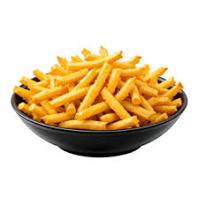

Home
French Fries

Description
French fries are a popular side dish made from potatoes that are cut into strips and deep-fried until crispy.
Ingredients
- potatoes
- oil for frying
- salt
Steps
- Cut potatoes into fry-shaped strips.
- Heat oil in a deep pan or fryer to 375°F (190°C).
- Fry the potato strips in batches until golden brown and crispy.
- Remove from oil and drain on paper towels.
- Sprinkle with salt and serve hot.